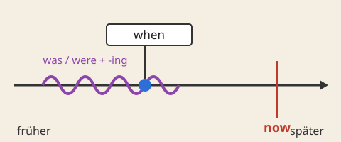

Was gerade im Gang war: das past progressive
Mit einem KI-Tutor lernen
Ein KI-Tutor erklärt dir diese Seite und hilft dir bei den Aufgaben. Wähl deinen Assistenten:
Mit Claude öffnen Mit ChatGPT öffnen Mit Mistral Vibe öffnen
Du nutzt dein eigenes Konto beim Anbieter. Der Assistent ist kein Angebot von lernapps.net: lernapps liefert nur Inhalte und Aufgaben. Die Wahl gilt für alle Seiten, nur auf diesem Gerät.
Was du schon kennst
Aufgabe
Lösung
Die Welle richtige Antwort
Die Welle zeigt, dass etwas läuft, zum Beispiel bei I am reading.
Die Punktreihe
Die Punktreihe steht für Gewohnheiten, die sich wiederholen (simple present).
Ein einzelner Punkt
Ein Punkt ist ein einzelnes Ereignis, zum Beispiel im simple past.
Der Bogen
Der Bogen reicht von früher bis now und gehört zum present perfect.
Die Welle steht für etwas, das im Gang ist. Diese Seite verschiebt sie in die Vergangenheit.
Das kannst du danach: Du erkennst in einem Text, was schon lief und was dann passierte. Und du bildest das past progressive mit was und were.
Ein Tagebuch
| Englisch | Deutsch |
|---|---|
| get off | aussteigen |
| castle | Burg |
| gate | Tor |
| guide | Führer / Führerin |
| count | zählen |
| still | noch immer |
| hurry up | sich beeilen |
| nobody | niemand |
| the lights went out | das Licht ging aus |
| switch | Schalter |
| torch | Taschenlampe |
| hall | Halle |
| king | König |
| ticket | Eintrittskarte |
| hold | halten |
| strange | seltsam |
| noise | Geräusch |
| carefully | aufmerksam, genau |
| suddenly | plötzlich |
| scream | schreien |
| fly, flew | fliegen |
[1] Dear diary, today we went on a school trip to the old castle at Harlow Bay. It was raining when we got off the bus, and a cold wind was blowing from the sea.
[2] Mr Hill was counting the students at the gate while Ellie was looking for her ticket. She was still searching her bag when the guide arrived. "Hurry up!" Amir said. "Everyone is waiting!"
[3] Inside the castle, we were walking through a dark hall when the lights went out. Nobody was talking. Then Peter laughed. He was standing next to the switch, and he was holding a torch under his chin!
[4] The guide was telling us about the old kings when I heard a strange noise. I was listening carefully when a window suddenly opened and a bird flew in. We all screamed, and then we laughed for ten minutes.
[5] In the evening, while the bus was driving home, everybody was sleeping. Only I was writing this. It was a perfect day.
Die Welle und der Punkt
Auf dem Zeitstrahl liegt links von now die Vergangenheit. Was damals schon lief, ist eine Welle. Was plötzlich geschah, ist ein Punkt. Der Punkt unterbricht die Welle. Die Welle heißt past progressive, der Punkt ist das simple past.

© CC-BY-4.0Die Welle lief schon. Der Punkt kommt dazu, das Fähnchen when zeigt auf ihn.
| Person | Form | Beispiel |
|---|---|---|
| I / he / she / it | was playing | He was playing chess. |
| you / we / they | were playing | We were playing outside. |
when und while sagen, wie die Wellen liegen. Nach when folgt oft der Punkt, der die Welle unterbricht (when the phone rang). Nach while läuft eine zweite Welle gleichzeitig (while he was cooking).
Merke
was / were + Verb mit -ing. Bei I, he, she und it steht was, bei you, we und they were. Das past progressive nennt, was im Hintergrund lief. Was plötzlich geschah, steht im simple past.
Das -ing bildest du wie im present progressive: bei einem kurzen Verb mit einem Vokal vor dem letzten Konsonanten verdoppelt sich der Konsonant (swim – swimming), ein stummes e fällt weg (make – making). Verneinung: wasn't und weren't. Frage: Were you sleeping? und What were you doing?
Übung
Aufgabe
Lösung
Die Klasse ging durch eine dunkle Halle. richtige Antwort
Das war die Welle. Das Licht ging aus, der Punkt kam dazu.
Ein Vogel flog gerade durchs Fenster.
Das passierte später, in Zeile 4. Mit dem Licht hat es nichts zu tun.
Mr Hill zählte die Kinder am Tor.
Das war am Tor, bevor die Klasse in der Burg war.
Zuerst lief die Welle, das Gehen durch die Halle. Dann kam der Punkt.
Aufgabe
Lösung
Zeile 2 richtige Antwort
In Zeile 2 steht while Ellie was looking for her ticket.
Zeile 5 richtige Antwort
In Zeile 5 steht while the bus was driving home.
Zeile 3
In Zeile 3 steht when the lights went out, nicht while.
Zeile 4
In Zeile 4 stehen zwei Sätze mit when, nicht mit while.
While verbindet zwei Wellen, die zur selben Zeit liefen. When bringt meist einen Punkt, der eine Welle unterbricht.
Aufgabe
Wähle die richtige Form.
- Amir putzte gerade seine Schuhe, als es klingelte. → Amir … his shoes when the bell rang.
- Wir warteten im Regen, als der Bus kam. → We … in the rain when the bus came.
- Meine Eltern sahen fern, als ich nach Hause kam. → My parents … TV when I came home.
- Die Kinder spielten Fußball, als es zu regnen begann. → The children … football when it began to rain.
Lösung
- Amir was cleaning his shoes when the bell rang.
- We were waiting in the rain when the bus came.
- My parents were watching TV when I came home.
- The children were playing football when it began to rain.
Aufgabe
Schreibe den ganzen Satz im past progressive.
Tipp
Frag dich, was schon im Gang war. Das bekommt was oder were und das Verb mit -ing.
- Sophie · write · a letter · at nine o'clock
- they · run · in the park · when it rained
- I · sit · in the garden · when the rain started
- we · talk · about music · when you called
Lösung
- Sophie was writing a letter at nine o'clock.
- They were running in the park when it rained.
- I was sitting in the garden when the rain started.
- We were talking about music when you called.
Aufgabe
Schreibe einen Satz mit while in der Vergangenheit. Beide Dinge laufen gleichzeitig, das sind zwei Wellen.
Tipp
Zwei Wellen mit while: zweimal was oder were mit der -ing-Form.
- Mum · cook · I · do my homework
- the dog · sleep · the children · play
Lösung
- Mum was cooking while I was doing my homework.
- The dog was sleeping while the children were playing.
Aufgabe
In jedem Satz steckt ein Fehler. Schreibe den Satz richtig.
Tipp
Prüfe zuerst was oder were, dann das -ing.
- We was watching TV when the lights went out.
- She talking on the phone when I came in.
Lösung
- We were watching TV when the lights went out.
- She was talking on the phone when I came in.
Aufgabe
Hör zu und schreibe, was du hörst.
- KI
- KI
- KI
Lösung
- Mr Hill was drinking tea when the phone rang.
- The students were waiting in the hall.
- I was cooking while he was listening to music.
Selbst sprechen und schreiben
Aufgabe
Hör zu, sprich nach und nimm dich auf. Vergleiche dann mit dem Original.
Tipp
Hör den Satz zuerst. Sprich langsam nach und achte auf was und were.
- What were you doing at nine o'clock?KI
- They were playing cards in the garden.KI
- My sister was sleeping when I arrived.KI
Zum Aufnehmen braucht diese Aufgabe JavaScript. Die Beispiele kannst du auch ohne anhören.
Lösung
- What were you doing at nine o'clock?
- They were playing cards in the garden.
- My sister was sleeping when I arrived.
Offene Aufgabe
Schreibe einen kurzen Tagebucheintrag von drei bis vier Sätzen über einen Tag, an dem etwas Unerwartetes passierte. Nenne, was gerade im Gang war, und was dann passierte. Du kannst so beginnen: I was … when …
Eine gute Antwort enthält:
Lösung
I was walking home from school when it started to rain. My friend was waiting at the bus stop, and we were talking while we were waiting. Then the bus arrived.
Wie es weitergeht
Am Wandbild hängt jetzt eine Welle in der Vergangenheit, die ein Punkt unterbricht. Auf der nächsten Seite lernst du, wie du sagst, was schon vorher passiert war.
Fehler gefunden oder eine Idee für diese App?